Plot the observed data and the fitted model of an mkinfit object
Source:R/plot.mkinfit.R
plot.mkinfit.RdSolves the differential equations with the optimised and fixed parameters
from a previous successful call to mkinfit and plots the
observed data together with the solution of the fitted model.
# S3 method for mkinfit
plot(
x,
fit = x,
obs_vars = names(fit$mkinmod$map),
xlab = "Time",
ylab = "Residue",
xlim = range(fit$data$time),
ylim = "default",
col_obs = 1:length(obs_vars),
pch_obs = col_obs,
lty_obs = rep(1, length(obs_vars)),
add = FALSE,
legend = !add,
show_residuals = FALSE,
show_errplot = FALSE,
maxabs = "auto",
sep_obs = FALSE,
rel.height.middle = 0.9,
row_layout = FALSE,
lpos = "topright",
inset = c(0.05, 0.05),
show_errmin = FALSE,
errmin_digits = 3,
frame = TRUE,
...
)
plot_sep(
fit,
show_errmin = TRUE,
show_residuals = ifelse(identical(fit$err_mod, "const"), TRUE, "standardized"),
...
)
plot_res(
fit,
sep_obs = FALSE,
show_errmin = sep_obs,
standardized = ifelse(identical(fit$err_mod, "const"), FALSE, TRUE),
...
)
plot_err(fit, sep_obs = FALSE, show_errmin = sep_obs, ...)Arguments
- x
Alias for fit introduced for compatibility with the generic S3 method.
- fit
An object of class
mkinfit.- obs_vars
A character vector of names of the observed variables for which the data and the model should be plotted. Defauls to all observed variables in the model.
- xlab
Label for the x axis.
- ylab
Label for the y axis.
- xlim
Plot range in x direction.
- ylim
Plot range in y direction. If given as a list, plot ranges for the different plot rows can be given for row layout.
- col_obs
Colors used for plotting the observed data and the corresponding model prediction lines.
- pch_obs
Symbols to be used for plotting the data.
- lty_obs
Line types to be used for the model predictions.
- add
Should the plot be added to an existing plot?
- legend
Should a legend be added to the plot?
- show_residuals
Should residuals be shown? If only one plot of the fits is shown, the residual plot is in the lower third of the plot. Otherwise, i.e. if "sep_obs" is given, the residual plots will be located to the right of the plots of the fitted curves. If this is set to 'standardized', a plot of the residuals divided by the standard deviation given by the fitted error model will be shown.
- show_errplot
Should squared residuals and the error model be shown? If only one plot of the fits is shown, this plot is in the lower third of the plot. Otherwise, i.e. if "sep_obs" is given, the residual plots will be located to the right of the plots of the fitted curves.
- maxabs
Maximum absolute value of the residuals. This is used for the scaling of the y axis and defaults to "auto".
- sep_obs
Should the observed variables be shown in separate subplots? If yes, residual plots requested by "show_residuals" will be shown next to, not below the plot of the fits.
- rel.height.middle
The relative height of the middle plot, if more than two rows of plots are shown.
- row_layout
Should we use a row layout where the residual plot or the error model plot is shown to the right?
- lpos
Position(s) of the legend(s). Passed to
legendas the first argument. If not length one, this should be of the same length as the obs_var argument.- inset
Passed to
legendif applicable.- show_errmin
Should the FOCUS chi2 error value be shown in the upper margin of the plot?
- errmin_digits
The number of significant digits for rounding the FOCUS chi2 error percentage.
- frame
Should a frame be drawn around the plots?
- ...
Further arguments passed to
plot.- standardized
When calling 'plot_res', should the residuals be standardized in the residual plot?
Value
The function is called for its side effect.
Details
If the current plot device is a tikz device, then
latex is being used for the formatting of the chi2 error level, if
show_errmin = TRUE.
Examples
# One parent compound, one metabolite, both single first order, path from
# parent to sink included
# \dontrun{
SFO_SFO <- mkinmod(parent = mkinsub("SFO", "m1", full = "Parent"),
m1 = mkinsub("SFO", full = "Metabolite M1" ))
#> Temporary DLL for differentials generated and loaded
fit <- mkinfit(SFO_SFO, FOCUS_2006_D, quiet = TRUE)
#> Warning: Observations with value of zero were removed from the data
fit <- mkinfit(SFO_SFO, FOCUS_2006_D, quiet = TRUE, error_model = "tc")
#> Warning: Observations with value of zero were removed from the data
plot(fit)
 plot_res(fit)
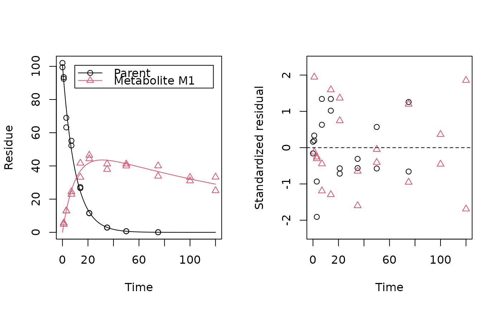
plot_res(fit, standardized = FALSE)
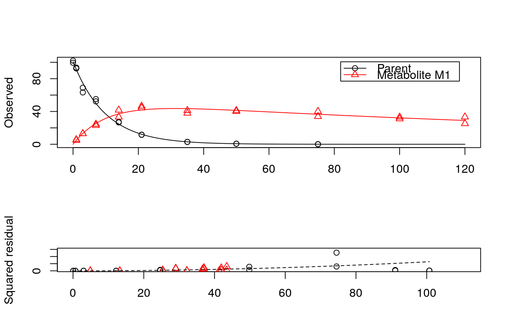
plot_err(fit)
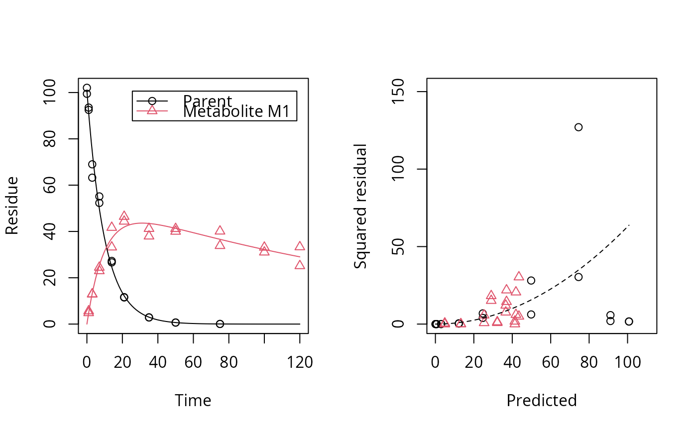
# Show the observed variables separately, with residuals
plot(fit, sep_obs = TRUE, show_residuals = TRUE, lpos = c("topright", "bottomright"),
show_errmin = TRUE)
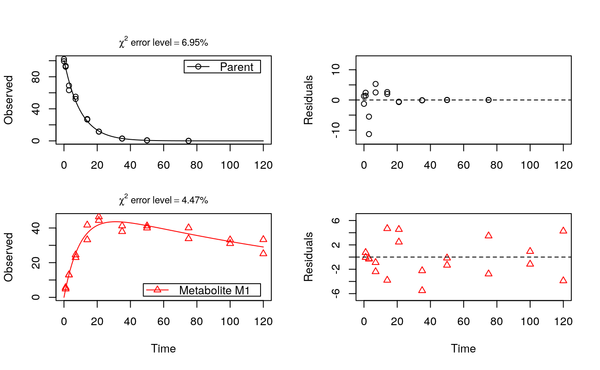
# The same can be obtained with less typing, using the convenience function plot_sep
plot_sep(fit, lpos = c("topright", "bottomright"))
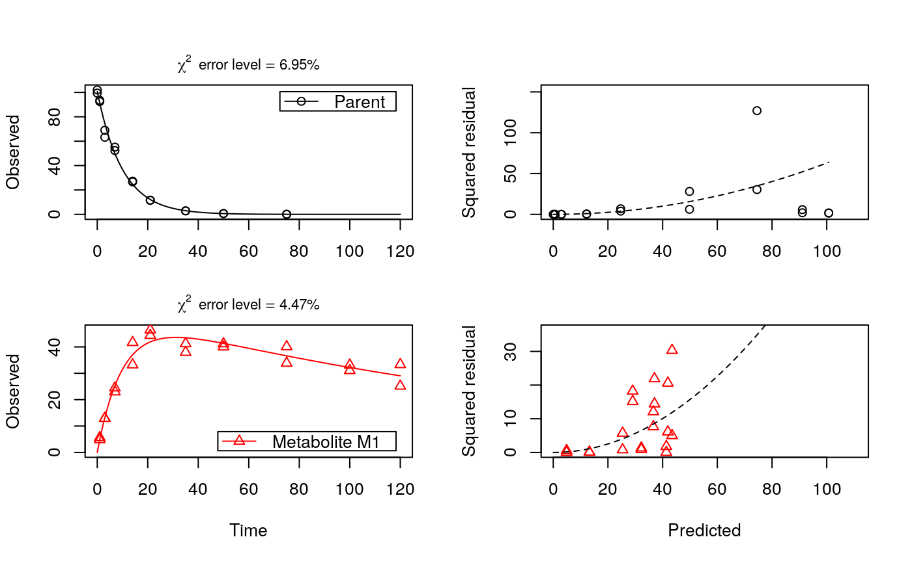
# Show the observed variables separately, with the error model
plot(fit, sep_obs = TRUE, show_errplot = TRUE, lpos = c("topright", "bottomright"),
show_errmin = TRUE)
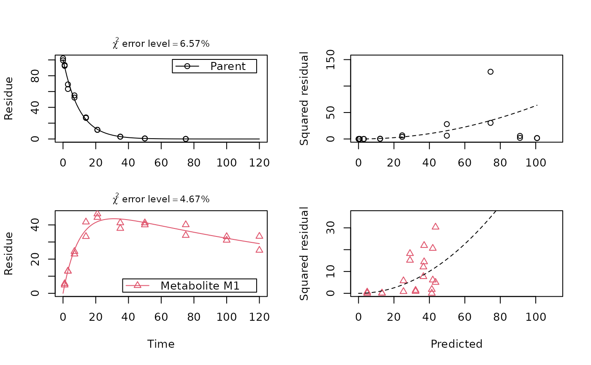
# }
plot_res(fit)
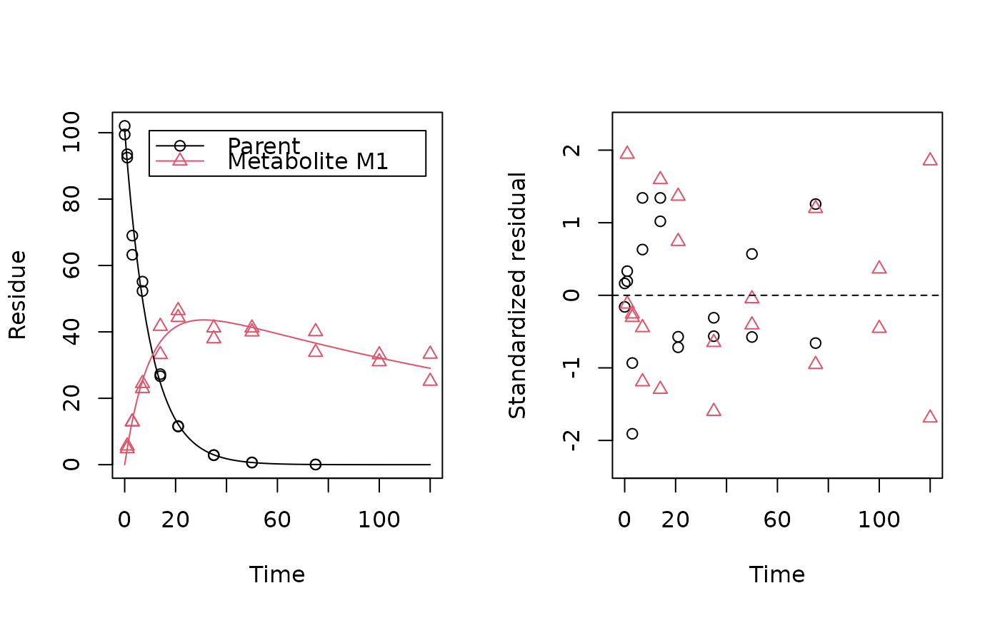
plot_res(fit, standardized = FALSE)
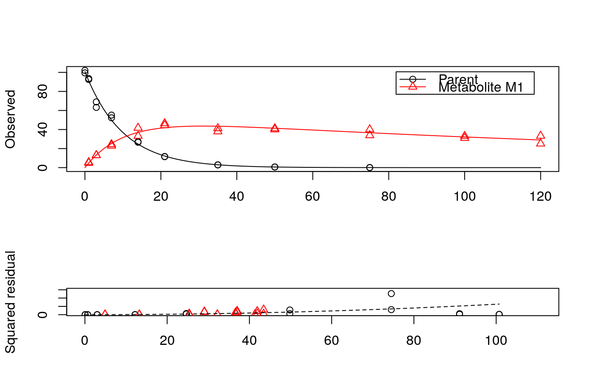
plot_err(fit)
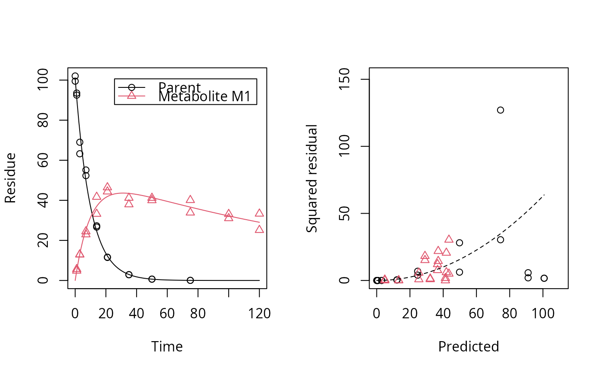
# Show the observed variables separately, with residuals
plot(fit, sep_obs = TRUE, show_residuals = TRUE, lpos = c("topright", "bottomright"),
show_errmin = TRUE)
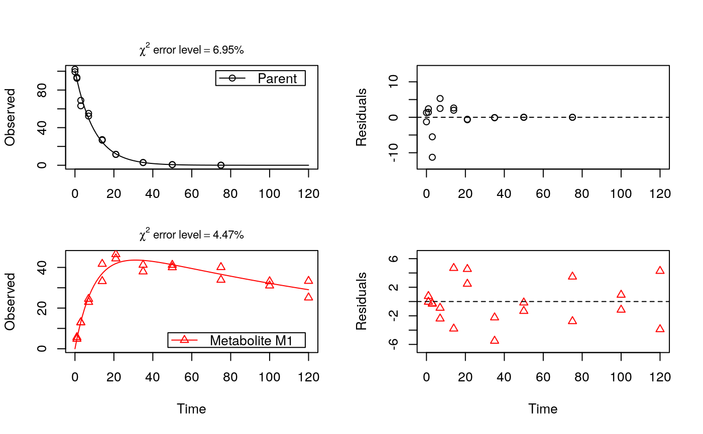
# The same can be obtained with less typing, using the convenience function plot_sep
plot_sep(fit, lpos = c("topright", "bottomright"))
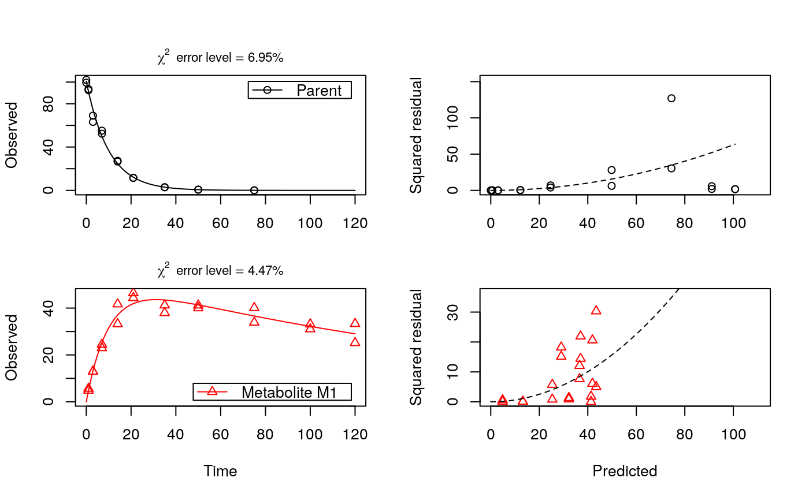
# Show the observed variables separately, with the error model
plot(fit, sep_obs = TRUE, show_errplot = TRUE, lpos = c("topright", "bottomright"),
show_errmin = TRUE)
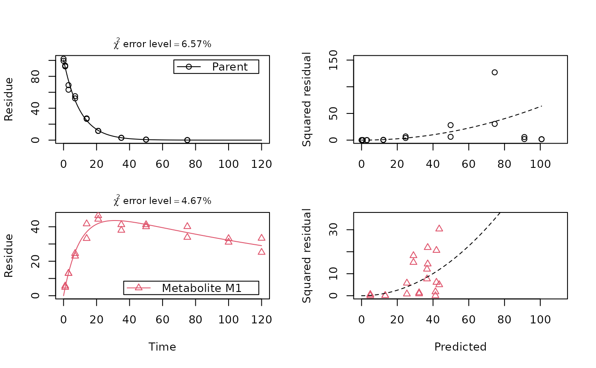
# }